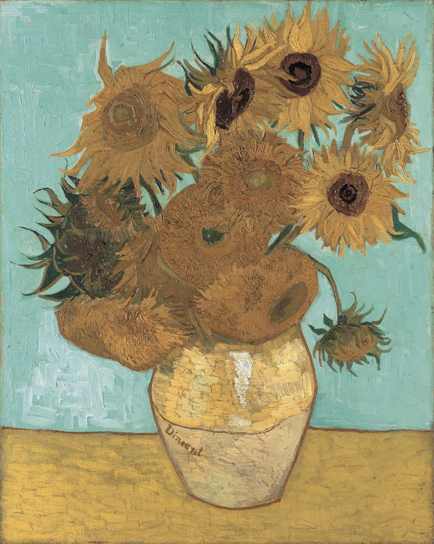

tags with some text. Use a class in the div to size the painting.
Resize them smaller and float them
Do something with someone else's javascript - a slider, a popup. Don't be afraid to try something and fail. Preferably jquery.
Link to a painting in someone else's database!
Slider:

Sunflowers. What do you say about sunflowers?
Class notes
Here
Insert Photo.
I’m _______.
Quickly Show Without Expecting Participation